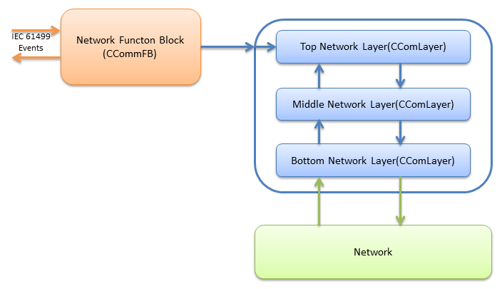
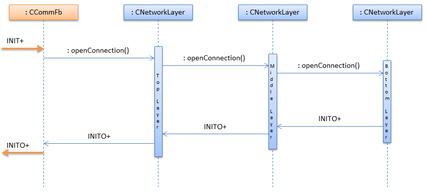
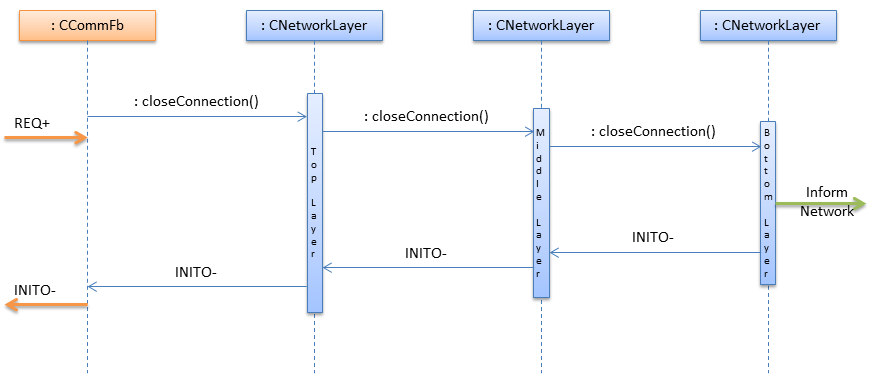
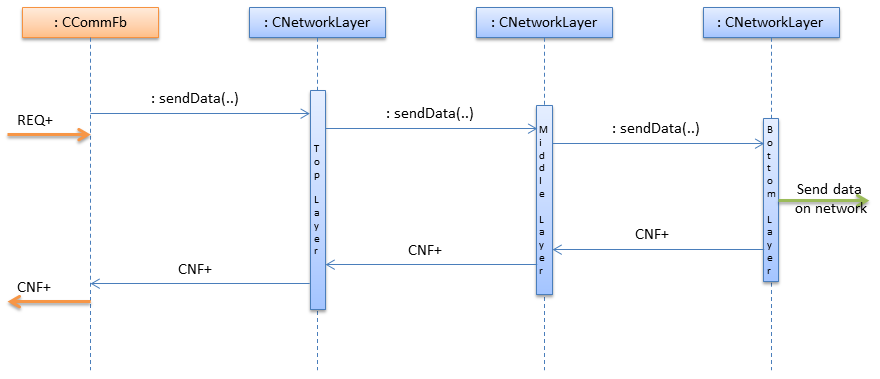
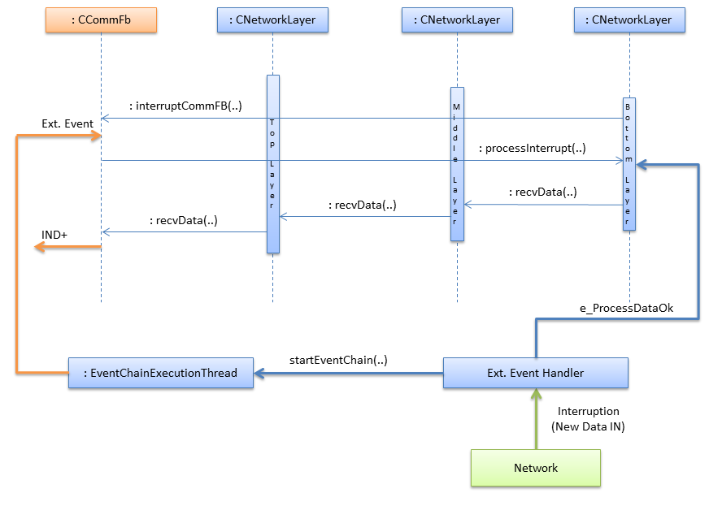
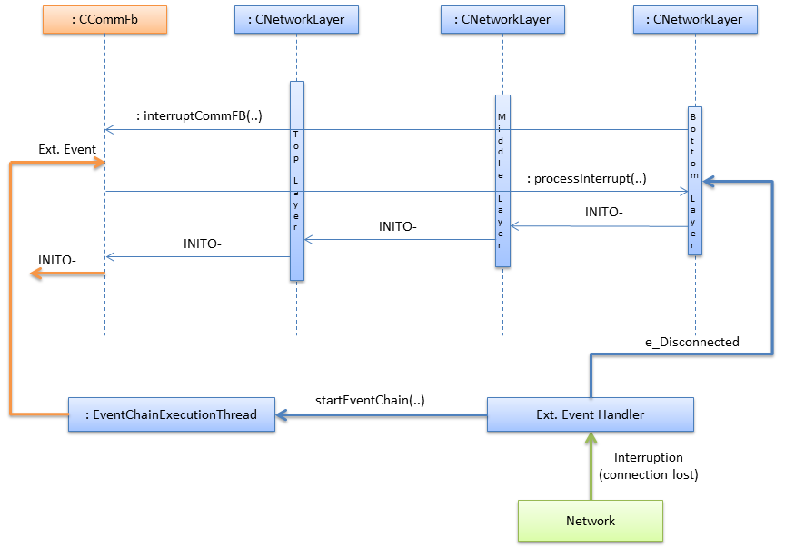

fbdk[].ip[192.168.20.1:61499]
Communication Architecture
Layered Network Interface
The network interface is designed to be as flexible as possible. This means that the integration of new protocols should be easy to implement and that the reuse of implemented protocols is kept as high as possible. The basis for the network interface is the implementation of the layer design pattern. Every layer takes the role of one of the OSI-layers. The interface between every layer is defined for all layers. Thus, it is basically allowed to implement more or less layers from the OSI-layer model.
An overview of the network interface is shown in Figure 1. The figure shows the different class types and the basic interaction of those. The function block class (CCommFB) is the only class which interacts with IEC 61499 applications, and has to be able to send and receive IEC 61499 events. The function block class and the layer classes are interacting by the following functions, a detailed description is given in the this section:
-
openConnection: Called by the function block to open a connection, has to be implemented by every layer and by the network stack. -
closeConnection: Called by the function block to close a connection, has to be implemented by every layer and by the network stack. -
sendData: Called by the function block to send a message over the network, has to be implemented by every layer and by the network stack. -
recvData: Called when new messages are received from the network, has to be implemented by every layer. -
processInterrupt: Called from the network stack when a layer needs to process data.
Configuration of Function Blocks
There are a lot of options how to implement an ID. A very convenient way to specify the protocol, is used in the URLs of web pages: a web browser uses the first part of the URL to identify the protocol, for example http:// or ftp://. To be able to specify more protocols, a more flexible way to specify protocols is needed. The following specification allows to specify all layers of the OSI-model.
-
protocol: string to identify the protocol -
parameter: vendor specific string -
ID: `{protocol[parameter].}protocol[parameter]
The following example uses this specification to describe a connection with an ASN.1 encoding and an TCP connection as transport layer:
The naming of the layers is specified in the comlayersmanager.cpp file which will be generated accordingly to the settings in CMake.
Network Layer
One network layer takes the role of one OSI layer. As there is no information which layer will be implemented, a generic interface has been chosen for all layers. The generic interface only defines basic functions: open connection, close connection, send data, receive data and generic interrupts. The functions are discussed in detail in the following sections. There are also three roles a layer can take: top layer, middle layer and bottom layer.
-
Top Layer: The top layer is able to access the data ports of a function block directly and the send function is only used to indicate that all data ports are ready to be sent.
-
Middle Layer: For the middle layer, all functions defined in the generic interface must be implemented. In most cases the middle layer adds some extra information to a message, like an encoding, compression, session information etc.
-
Bottom Layer: The bottom layer is able to directly access the network. The bottom layer also has to be able to get data asynchronously from the network. The bottom layer will, in most cases, not implement recvData function, as this is handled directly by the network interface.

Figure 1. Overview of the Network Layer
Open Connection
The layer function openConnection is used to initialize the current layer. The layer gets two types of information, first the parameter for the initialization and a second parameter to create the bottom layer. A layer does not know anything about the layer beneath it, therefore a factory class has to create the beneath layer. The beneath layer is created with the second parameter of the openConnection function, if this is 0 no more layers below will be created. The openConnection function is called when the function block receives an INIT+ event. The function can also fail, for example, when the network device is not ready.

Figure 2. Open connection successful
Figure 3. Open connection failed
Close Connection
The closeConnection function is dependent to the openConnection function. The function closes all beneath layers and then closes the own connection.

Figure 4. Sequence diagram of closing a connection
Send Data
This function can be implemented in three ways, as top, middle or bottom layer. The basic functionality of the function is to get data from the above layer, pack it and send it to the beneath layer. The middle layer is the most flexible layer, as it is possible to add additional middle layers to almost every stack.
-
The implementation of the top layer only differs, by whom and how the function is called. A top layer is called from the function block and has to get the information directly from the function block.
-
The bottom layer has to write the data to the network. Therefore, the sendData function will not call another sendData function like on the top or middle layer. In most cases, the data is sent by the operating system, by calling an API function of the operating system.
-
The message is passed from one layer to the next until the last layer is reached. The last layer (bottom layer), sends the message to the network and returns a confirm event to the function block.

Figure 5. Send data on an established connection
Receive Data
The recvData function is split into the same parts as the sendData function. The top and middle layer are similar to the sendData function, only the bottom layer needs additional discussion.
The problem of the bottom layer is that the system has to generate an interrupt. A message from the network can be detected by an interrupt, polling or a system call which waits until new data is received. The execution thread of the function block cannot be used because that thread is used to execute the function blocks. If the function block thread was used, function blocks would not be executed while waiting for an event from the network.
To solve this, 4diac FORTE implements an External Event Handler in charge of processing external interrupts and starting the event chain execution threads.
An interrupt based receiving of data is shown in Figure 6.
First of all, the network triggers an interrupt at the External Event Handler.
This communicates the event to the bottom layer and starts an execution event chain.
The bottom layer then invokes the function block thread by calling interruptCommFB(..).
Once the Function Block receives the External Event it will call the processInterrupt function of the network layer.
Process interrupt will be usually done at the bottom or middle layer depending on how the data is processed.
Afterwards, the recvData(..) function will be called from lower to upper layer until the FunctionBlock receives the data and emits the CNF+/IND+ signal

Figure 6. Receive data of an established connection
Generic Interrupt
Receiving data is a special case of a generic interrupt.
The generic interrupt can also be used to receive errors of the network, like a lost connection.
In the same way as in the example of receiving data, the external event handler informs the bottom network layer which invokes the function block interrupt (or in some cases an intermediate layer) and starts the event chain.
Then, after receiving the External Event signal, the function block sends the processInterrupt() to the network layer, which returns an INIT- event indicating a lost connection.

Figure 7. Connection abort interrupt from network interface
Function Blocks
The implementation of the function blocks is based on the compliance profile. It is kept simple, the only implementation is the right handling of input/output events and the instantiation of function blocks with variable data input/output count. The event handling is described in this section. This is the part which interacts directly with the network interface.
Even though the event names of the function blocks are not the same, the network interface only supports two forms of events: initialization events and request events. The events can be refined in two aspects: input/output events, and as successful/not successful.
Events received/sent by a network function block.
| Event name | I/O names | Direction | Description |
|---|---|---|---|
Init Positive |
INIT+ |
Input |
Open new connection |
Init Negative |
INIT- |
Input |
Close connection, or connection terminated |
Request Positive |
REQ+/RSP+ |
Input |
Send data |
Request Negative |
REQ-/RSP- |
Input |
Ignore value |
Init Positive |
INITO+ |
Output |
New connection established |
Init Negative |
INITO- |
Output |
Connection closed |
Confirm Positive |
CNF+/IND+ |
Output |
New data available |
Confirm Negative |
CNF-/IND- |
Output |
Received data is invalid or connection error without connection closed |
Events to the Network Interface
The event direction, from the function block to the network interface is a simple function call. The Init Positive event leads to a openConnection call, the Init Negative event leads to a closeConnection call. The Request Positive call is either used to allow new receive events, if used in a server or subscriber, or to submit a send call, if used in a client or publisher. The Request Negative event is not handled, because it indicates invalid data at the function block input port.
Events of the Network Interface
There are two events which triggers the network interface: in response to an input event or asynchronously triggered by the network interface.
In most cases an input event leads to a corresponding output event, for example, an Init Positive input event will trigger an Init Positive output event as soon as the connection is established. To simplify the generation of events, all functions described in section Network Layer are able to return an event with a corresponding status message. The currently supported events are listed in table. The return events are prioritized, because it is possible that one layer returns a positive, but the underneath layer returns a negative send events: in this case, the worst case returned. It is also possible to not return any event. This is used, if the network interface does not trigger any event.
Events returned by a layer function call, ordered ascending by priority:
| Event | Symbol | Description |
|---|---|---|
No Event |
e_Nothing |
No event is triggered |
Init Positive |
e_InitOk |
Connection established |
Process Data Positive |
e_ProcessDataOk |
Data processed successfully |
Init Invalid ID |
e_InitInvalidId |
Invalid ID while opening connection |
Init Terminated |
e_InitTerminated |
Connection closed. |
Invalid Object |
e_ProcessDataInvalidObject |
Data processing failure due to invalid object |
Data Type Error |
e_ProcessDataDataTypeError |
Data processing failure due to data type error |
Data Inhibited |
e_ProcessDataInhibited |
Trying to send data without permission |
Socket Error |
e_ProcessDataNoSocket |
Data processing failure due to missing Socket |
Data Send Failed |
e_ProcessDataSendFailed |
Data was not send correctly |
Data Receive Failed |
e_ProcessDataRecvFailed |
Data was not received correctly |
The second way to generate an output event is an event, asynchronously triggered by the network interface. This issue is covered by the interrupt design pattern, described in Receive Data. An asynchronous event can be triggered in two cases, if data was received or a network error happened. The output event is triggered when the stackProcess function is finished.
Network Stack
The network stack describes a container of layers, which is used by the function block to send messages to the network. It is basically the interface of the function block, which sends to the network interface. For the network layers, the stack is the interface for accessing the function block and its resources. The network stack is responsible for the acquisition of the function block thread and the correct execution of the interrupt routines.
At the moment, the network stack is used for these described functions. The network stack is also used for feature extension, if a layers needs to manage resources. A possible feature is a memory management unit, where all layers request memory from a single pool. This brings a refined control of the memory usage per network stack.
Layer Factory
It is not possible to instantiate a generic stack without the configuration by the engineer, because this would mean the loss of flexibility. Therefore the stack must be built at runtime. This means, that it is not known, which layers are instantiated. The generic design pattern to solve such a situation is a factory.
The factory does not only create a new layer, it also initializes it. The above layer is informed by the new layer beneath it and the new layer is initialized with the parameter string and the corresponding network stack. This layer structure is a tree-pattern. Every layer only has one layer above, but it can have more than one layer beneath it.
Classes and methods:
CComLayersManager:
Creates new connections requested by the FB and implements the factory design pattern.
Methods:
-
static CComLayer* createCommunicationLayer(char paLayerIdentifier, CComLayer paUpperLayer, CCommFB * paComFB):
Creates a network Layer. Parameter paLayerIdentifier is used to create all underneath layers, paUpperLayer is used to send data to the above layer, and paComFB is the responsible Function Block.
CComLayer:
This class implements one layer of the network stack. In most cases this class packs or unpacks data into a bigger frame. The last layer accesses the network. In the last layer the recvData function is not used.
Methods:
-
EComResponse openConnection(char *paConnectionParams, char *paRemainingConnectionID):
This function will configure this layer and if necessary create necessary bottom layers. ThepaConnectionParamsis used to configure the implemented layer, andpaRemainingConnectionIDids configuration data of layers below this one. If0orpaRemainingConnectionIDequals '0x00' than there is no further layer below this one. Returns status of the opening process (e_InitOk). -
virtual void closeConnection() = 0:
Virtual function. Implementations of this function should perform the actions necessary for closing the layer and then call the closeConnection() of the bottom layer. -
virtual EComResponse sendData(void *paData, unsigned int paSize) = 0:
Virtual function. Takes the given data and performs the necessary process for sending data. ParameterpaDatais the pointer to the data to be sent andpaSizeis the size of the data. It returns the status of the sending process. -
virtual EComResponse recvData(const void *paData, unsigned int paSize) = 0:
Virtual function. Takes the given data and performs the necessary process for receiving data. ParameterpaDatais the pointer to the data received andpaSizeis the size of the data received. It returns the status of the receiving process. -
virtual EComResponse processInterrupt():
Virtual function. Used to finish the data received in a context outside the communication interrupt.
CCommFB:
This class is the function block, which uses the network stack for sending and receiving data. The function block has to be able to start a new event chain, otherwise it is not possible to switch between the interrupt thread and the execution thread of the resource. We only show a few of the methods here, for more information check source code.
Methods:
-
void interruptCommFB(CComLayer *paComLayer):
Starts a new event chain. This function is used to change the thread from theinterruptCommFB()call to the thread which executes the resource in which the function block is created. -
getFBTypeId(void): This method is used by the Query command to get the instances correct type name (e.g. "CLIENT_3_2"). -
EComServiceType getComServiceType():
Returns if the FB is of Publisher, Subscriber, Server or Client type.
Where to go from here?
Go back to Development index:
If you want to go back to the Start Here page, we leave you here a fast access
Or Go to top